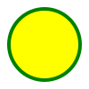

<!--
    SVG <svg>

    É uma marcação, estilo html, mas não é para textos, e sim para fazer imagens.
    Possuimos elementos para gerar formas

    Para entender melhor
    - Imagem rasterizada(formada com pixel, ex: jpg, png) X Imagem vetorizada (imagem svg)

    Benefícios
    - Mais leve
    - Mais detalhada
    - Maior acessibilidade e SEO
    - Pode ser editada via CSS ou atributos

    Desvantagens
    - Pode ser mais complicado de trabalhar
    - Quanto mais complexa a imagem, mais trabalho para o navegador
    - Navegadores mais antigos não possuem suporte a essa tag

    Para fotografias, ainda prefira usar imagens rasterizadas.

    Alguns atributos
    - width (largura)
    - height (altura)
    - <circle>
        - r (raio do circulo)
        - cx,cy (localização do centro do circulo no svg)
        - stroke (cor da borda)
        - stroke-width (largura da borda)
        - fill (cor de preenchimento)
    - <rect>
        ...

    * Saiba mais em: https://developer.mozilla.org/pt-BR/docs/Web/SVG/Element/svg
-->

<!-- 1ª Maneira de Usar (menos viável) -->
<svg width="150" height="150">
    <circle cx="75" cy="75" r="60" stroke="purple" stroke-width="4" fill="pink"></circle>
</svg>

<svg width="300" height="200">
    <rect width="100%" height="100%" stroke="red" stroke-width="4" fill="blue"></rect>
</svg>

<!-- 2ª Maneira Maneira (mais viável dependendo do caso) -->
<br>




